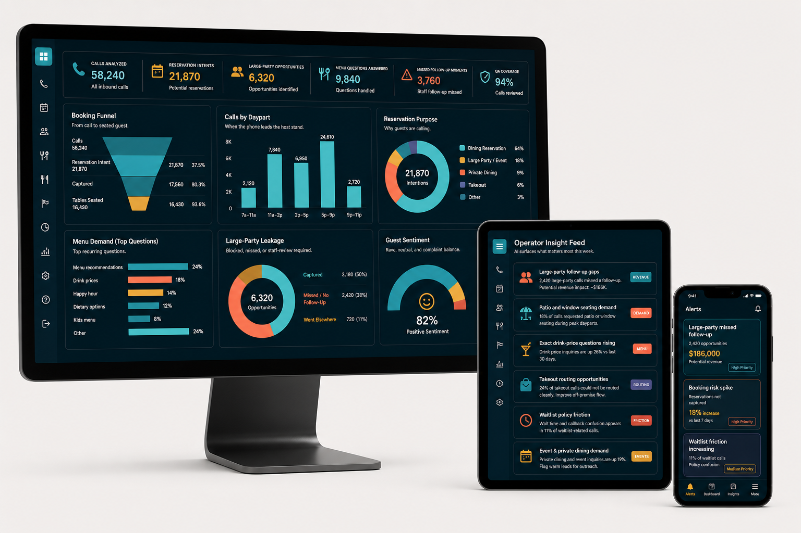

All inbound restaurant calls classified and summarized.
Restaurant Call Analytics for Peak Demand
Turn the host stand's phone traffic into booking, menu, and service intelligence.
Every ring is either a guest helped, a table won, or a pattern waiting to be found.
Contact (843) 333-2100
Illustrative 30-day operating view after tens of thousands of restaurant calls
Booking signals, conversion paths, and no-show risk captured.
High-value parties surfaced before they disappear into voicemail.
Demand for pricing, specials, allergies, hours, and policies.
Staff-review, waitlist, and private-event opportunities recovered.
Calls reviewed for accuracy, tone, handoff, and outcome quality.
Analytics Cockpit
Real conversations. Real patterns. Real performance.
Booking Funnel
From call to seated guest.
Calls58,240
Reservation intent21,870
Captured17,560
Tables seated16,430
Calls by Daypart
When the phone loads the host stand.
7a-11a2,120
11a-2p7,840
2p-5p6,950
5p-9p24,610
9p-11p2,720
Reservation Purpose
Why guests are calling.
21,870
intents
Dining reservation 64%
Large party / event 18%
Private dining 9%
Takeout 6%
Menu Demand
Top recurring questions.
Large-Party Leakage
Blocked, missed, or staff-review required.
6,320
opportunities
Captured 50%
Missed / no follow-up 38%
Went elsewhere 11%
Guest Sentiment
Rave, neutral, and complaint balance.
82%
Positive sentiment
Positive 82%
Neutral 13%
Negative 5%
Operator Insight Feed
AI surfaces what matters this week.
2,420 large-party calls missed a structured follow-up. Recovery opportunity: roughly $186K in potential revenue.
Revenue24% of takeout calls could not be routed cleanly. Simplify and capture more off-premise revenue.
Routing18% of calls requested patio or window seating. Consider proactive offers during peak dayparts.
DemandWait time and callback policy confusion appears in 11% of waitlist-related calls.
FrictionDrink price inquiries are up 26% over the last 30 days. Add live pricing to menu guidance.
MenuPrivate dining and event inquiries are up 19%. Flag warm leads for staff outreach.
EventsInsight Anywhere
Designed for how restaurant teams work: office, floor, and on the move.

Desktop
Comprehensive cockpit for PC or Mac review by operators, owners, and multi-unit teams.
Tablet
Actionable takeaways and seating demand at a glance during manager huddles.
Phone
Real-time alerts for booking risks, large-party opportunities, and follow-up gaps.
Built for Restaurant Performance
Reservation Intelligence
Menu Demand
Large-Party Leakage
Seating Preference Tracking
Waitlist Friction
Takeout Routing
Staff Coaching
QA Readiness
Contact
Turn every conversation into better decisions and better nights.
Brittain Software4177 Cheswick Lane
Virginia Beach, VA 23455 (843) 333-2100